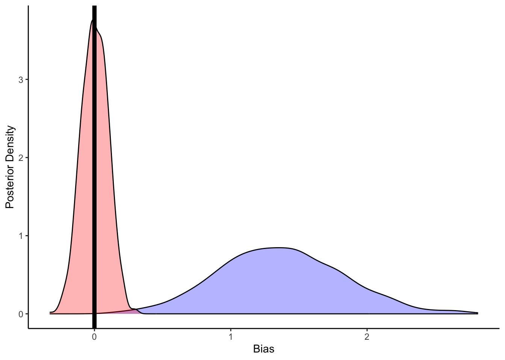
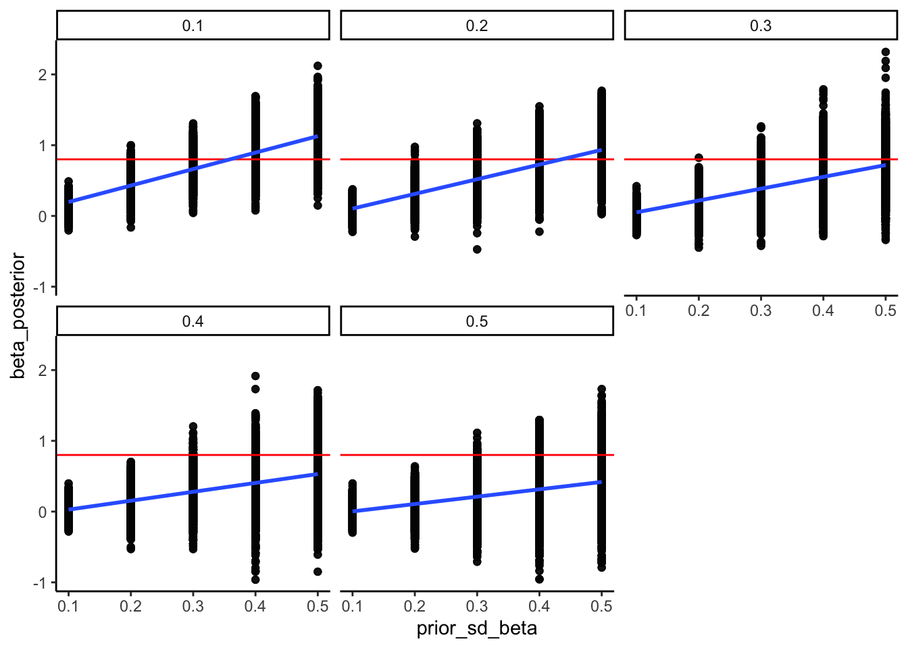

Chapter 6 Model Quality Assessment
6.1 Introduction
Building computational models is only the first step in understanding cognitive processes. We must rigorously evaluate whether our models actually capture meaningful patterns in behavior and provide reliable insights. This chapter introduces systematic approaches for assessing model quality, focusing on techniques that help us understand both the strengths and limitations of our cognitive models.
This document covers: - generating and plotting priors (against posteriors) - generating and plotting predictive checks (prior and posterior ones) - prior sensitivity checks
[I SHOULD RESTRUCTURE THE DOCUMENT SO THAT PRIOR PREDICTIVE CHECKS COME BEFORE PRIOR / POSTERIOR UPDATE CHECKS]
6.2 Generating and plotting additional variables
As we try to understand our model, we might want to plot how the prior relates to the posterior, or - in other words, what has the model learned from looking at the data? We can do so by overlaying the prior and the posterior distributions, what is also called a “prior - posterior update check”.
Stan does not automatically save the prior distribution, so we need to tell it to generate and save prior distributions in a convenient place so we can easily plot or use them at will from R. Luckily, Stan gives us a dedicated code chunk to do that: the generated quantities chunk. As before, we need to define the kind of variable we want to save, and then how to generate it.
If we take the example of the random agent (with a bias), we have one parameter: theta. We can then generate theta according to the prior in generated quantities. While we are at this, we can also generate a nicer version of the posterior estimate for the theta parameter, now in probability scale (instead of log odds).
However, prior and posterior estimates are not always the most immediate thing to understand. For instance, we might have trouble having a good grasp for how the uncertainty in the estimate will play out on 120 trials, or 6 trials, or however many trials we are planning for our experiment. Luckily, we can ask Stan to run predictions from either priors or posteriors, or both: given the priors how many trials will have “right hand” choice? and given the posterior estimates?
As we use complex models, the relation between prior/posterior estimates and predictions becomes less and less intuitive. Simulating their implications for the outcomes - also called prior/posterior predictive checks - becomes a very useful tool to adjust our priors and their uncertainty so that they reflect what we know of the outcome scale; as well as to assess whether the model (and its posterior estimates) can appropriately describe the data we observe, or there’s some bias there. More discussion of this can be found at https://4ccoxau.github.io/PriorsWorkshop/.
pacman::p_load(tidyverse,
here,
posterior,
cmdstanr,
brms, tidybayes)
d <- read_csv("simdata/W3_randomnoise.csv")
stan_model <- "
// This model infers a random bias from a sequences of 1s and 0s (right and left hand choices)
// The input (data) for the model. n of trials and the sequence of choices (right as 1, left as 0)
data {
int<lower=1> n; // n of trials
array[n] int h; // sequence of choices (right as 1, left as 0) as long as n
}
// The parameters that the model needs to estimate (theta)
parameters {
real theta; // note it is unbounded as we now work on log odds
}
// The model to be estimated (a bernoulli, parameter theta, prior on the theta)
model {
// The prior for theta on a log odds scale is a normal distribution with a mean of 0 and a sd of 1.
// This covers most of the probability space between 0 and 1, after being converted to probability.
target += normal_lpdf(theta | 0, 1);
// The model consists of a bernoulli distribution (binomial w 1 trial only) with a rate theta,
// note we specify it uses a logit link (theta is in logodds)
target += bernoulli_logit_lpmf(h | theta);
}
generated quantities{
real<lower=0, upper=1> theta_prior; // theta prior parameter, on a prob scale (0-1)
real<lower=0, upper=1> theta_posterior; // theta posterior parameter, on a prob scale (0-1)
int<lower=0, upper=n> prior_preds; // distribution of right hand choices according to the prior
int<lower=0, upper=n> posterior_preds; // distribution of right hand choices according to the posterior
theta_prior = inv_logit(normal_rng(0,1)); // generating the prior on a log odds scale and converting
theta_posterior = inv_logit(theta); // converting the posterior estimate from log odds to prob.
prior_preds = binomial_rng(n, theta_prior);
posterior_preds = binomial_rng(n, inv_logit(theta));
}
"
write_stan_file(
stan_model,
dir = "stan/",
basename = "W4_SimpleBernoulli_logodds.stan")## [1] "/Users/au209589/Dropbox/Teaching/AdvancedCognitiveModeling23_book/stan/W4_SimpleBernoulli_logodds.stan"## With the logit format
## Specify where the model is
file <- file.path("stan/W4_SimpleBernoulli_logodds.stan")
mod <- cmdstan_model(file,
cpp_options = list(stan_threads = TRUE),
stanc_options = list("O1"))
d1 <- d %>% subset(noise == 0 & rate == 0.8)
## Create the data. N.B. note the two variables have different lengths: 1 for n, n for h.
data <- list(
n = 120, # n of trials
h = d1$choice # sequence of choices (h stands for hand)
)
# The following command calls Stan with specific options.
samples <- mod$sample(
data = data,
seed = 123,
chains = 2,
parallel_chains = 2,
threads_per_chain = 2,
iter_warmup = 1000,
iter_sampling = 2000,
refresh = 0,
max_treedepth = 20,
adapt_delta = 0.99,
)## Running MCMC with 2 parallel chains, with 2 thread(s) per chain...
##
## Chain 1 finished in 0.1 seconds.
## Chain 2 finished in 0.0 seconds.
##
## Both chains finished successfully.
## Mean chain execution time: 0.0 seconds.
## Total execution time: 0.4 seconds.6.3 Assessing priors
# Now let's plot the density for theta (prior and posterior)
ggplot(draws_df) +
geom_density(aes(theta_posterior), fill = "blue", alpha = 0.3) +
geom_density(aes(theta_prior), fill = "red", alpha = 0.3) +
geom_vline(xintercept = 0.8, linetype = "dashed", color = "black", size = 1.5) +
xlab("Rate") +
ylab("Estimate Densities") +
theme_classic()
6.4 Prior Predictive Checks
Prior predictive checks involve simulating data from our model using only the prior distributions, before seeing any actual data. This helps us understand what kinds of patterns our model assumes are possible before we begin fitting to real observations.
These predictions should be assessed for:
- Plausible ranges of behavior
- Appropriate levels of uncertainty
- Preservation of known constraints
- Coverage of theoretically important patterns
6.5 Posterior Predictive Checks
After fitting our models, posterior predictive checks help us determine whether the fitted model can reproduce key patterns in our observed data. We generate new data using parameters sampled from the posterior distribution and compare these simulations to our actual observations. For decision-making models, important patterns to check include:
- Overall choice proportions
- Sequential dependencies in choices
- Learning curves
- Response to feedback
- Individual differences in strategies
ggplot(draws_df) +
geom_histogram(aes(prior_preds), color = "darkblue", fill = "blue", alpha = 0.3) +
xlab("Predicted heads out of 120 trials") +
ylab("Posterior Density") +
theme_classic()
ggplot(draws_df) +
geom_histogram(aes(posterior_preds), color = "darkblue", fill = "blue", alpha = 0.3, bins = 90) +
geom_point(x = sum(data$h), y = 0, color = "red", shape = 17, size = 5) +
xlab("Predicted heads out of 120 trials") +
ylab("Posterior Density") +
theme_classic()
ggplot(draws_df) +
geom_histogram(aes(prior_preds), color = "lightblue", fill = "blue", alpha = 0.3, bins = 90) +
geom_histogram(aes(posterior_preds), color = "darkblue", fill = "blue", alpha = 0.3, bins = 90) +
geom_point(x = sum(data$h), y = 0, color = "red", shape = 17, size = 5) +
xlab("Predicted heads out of 120 trials") +
ylab("Posterior Density") +
theme_classic()
6.6 Prior sensitivity analysis
## Now we adding different priors for theta
prior_mean <- seq(-3, 3, .5)
prior_sd <- seq(0.1, 1, 0.1)
priors <- expand.grid(prior_mean, prior_sd)
priors <- tibble(prior_mean = priors$Var1, prior_sd = priors$Var2)
stan_model <- "
// The input (data) for the model
data {
int<lower=1> n;
array[n] int h;
real prior_mean;
real<lower=0> prior_sd;
}
// The parameters accepted by the model.
parameters {
real theta;
}
// The model to be estimated.
model {
// Prior
target += normal_lpdf(theta | prior_mean, prior_sd);
// Model
target += bernoulli_logit_lpmf(h | theta);
}
generated quantities{
real<lower=0, upper=1> theta_prior;
real<lower=0, upper=1> theta_posterior;
int<lower=0, upper=n> prior_preds;
int<lower=0, upper=n> posterior_preds;
theta_prior = inv_logit(normal_rng(0,1));
theta_posterior = inv_logit(theta);
prior_preds = binomial_rng(n, theta_prior);
posterior_preds = binomial_rng(n, inv_logit(theta));
}
"
write_stan_file(
stan_model,
dir = "stan/",
basename = "W4_PriorBernoulli.stan")
file <- file.path("stan/W4_PriorBernoulli.stan")
mod <- cmdstan_model(file,
cpp_options = list(stan_threads = TRUE),
stanc_options = list("O1"))
dd <- d %>% subset(noise == 0.1 & rate == 0.8)
pacman::p_load(future, purrr, furrr)
plan(multisession, workers = 4)
sim_d_and_fit <- function(prior_mean, prior_sd) {
data <- list(
n = nrow(dd),
h = dd$choice,
prior_mean = prior_mean,
prior_sd = prior_sd
)
samples <- mod$sample(
data = data,
seed = 1000,
chains = 1,
parallel_chains = 1,
threads_per_chain = 1,
iter_warmup = 1000,
iter_sampling = 2000,
refresh = 0,
max_treedepth = 20,
adapt_delta = 0.99,
)
draws_df <- as_draws_df(samples$draws())
temp <- tibble(theta_prior = draws_df$theta_prior,
theta_posterior = draws_df$theta_posterior,
prior_preds = draws_df$prior_preds,
posterior_preds = draws_df$posterior_preds,
prior_mean = prior_mean,
prior_sd = prior_sd)
return(temp)
}
# Commenting this out to ensure faster compiling time for the book. Uncomment to run the code
# recovery_df <- future_pmap_dfr(priors, sim_d_and_fit, .options = furrr_options(seed = TRUE))
# write_csv(recovery_df, "simdata/W4_priorSensitivityRecovery.csv")Now we load the data and plot it
recovery_df <- read_csv("simdata/W4_priorSensitivityRecovery.csv")
ggplot(recovery_df, aes(prior_mean, theta_posterior)) +
geom_point(alpha = 0.1) +
geom_hline(yintercept = 0.8, color = "red") +
geom_smooth() +
facet_wrap(.~prior_sd) +
theme_classic()
6.7 The memory model
We can do the same for the memory model: generate prior distributions to overlay to the posteriors (prior-posterior update checks), generate predicted outcomes based on the priors (prior predictive checks) and on the posteriors (posterior predictive checks). N.B. prior and posterior predictions now depend on the value on memory. I identified 3 meaningful values for the memory value (e.g. 0.5, 0.7, 0.9) and used those to generate 3 prior and posterior predictive checks.
# We subset to only include no noise and a specific rate
d1 <- d %>%
subset(noise == 0 & rate == 0.8) %>%
rename(Other = choice) %>%
mutate(cumulativerate = lag(cumulativerate, 1))
d1$cumulativerate[1] <- 0.5 # no prior info at first trial
d1$cumulativerate[d1$cumulativerate == 0] <- 0.01
d1$cumulativerate[d1$cumulativerate == 1] <- 0.99
# Now we create the memory agent with a coefficient of 0.9
bias = 0
beta = 0.9
MemoryAgent_f <- function(bias, beta, cumulativerate){
choice = rbinom(1, 1, inv_logit_scaled(bias + beta * logit_scaled(cumulativerate)))
return(choice)
}
for (i in 1:trials) {
d1$Self[i] <- MemoryAgent_f(bias, beta, d1$cumulativerate[i])
}
## Create the data.
data <- list(
n = 120,
h = d1$Self,
other = d1$Other
)
stan_model <- "
// The input (data) for the model. n of trials and h for (right and left) hand
data {
int<lower=1> n;
array[n] int h;
array[n] int other;
}
// The parameters accepted by the model.
parameters {
real bias; // how likely is the agent to pick right when the previous rate has no information (50-50)?
real beta; // how strongly is previous rate impacting the decision?
}
transformed parameters{
vector[n] memory;
for (trial in 1:n){
if (trial == 1) {
memory[trial] = 0.5;
}
if (trial < n){
memory[trial + 1] = memory[trial] + ((other[trial] - memory[trial]) / trial);
if (memory[trial + 1] == 0){memory[trial + 1] = 0.01;}
if (memory[trial + 1] == 1){memory[trial + 1] = 0.99;}
}
}
}
// The model to be estimated.
model {
// Priors
target += normal_lpdf(bias | 0, .3);
target += normal_lpdf(beta | 0, .5);
// Model, looping to keep track of memory
for (trial in 1:n) {
target += bernoulli_logit_lpmf(h[trial] | bias + beta * logit(memory[trial]));
}
}
generated quantities{
real bias_prior;
real beta_prior;
int<lower=0, upper=n> prior_preds5;
int<lower=0, upper=n> post_preds5;
int<lower=0, upper=n> prior_preds7;
int<lower=0, upper=n> post_preds7;
int<lower=0, upper=n> prior_preds9;
int<lower=0, upper=n> post_preds9;
bias_prior = normal_rng(0, 0.3);
beta_prior = normal_rng(0, 0.5);
prior_preds5 = binomial_rng(n, inv_logit(bias_prior + beta_prior * logit(0.5)));
prior_preds7 = binomial_rng(n, inv_logit(bias_prior + beta_prior * logit(0.7)));
prior_preds9 = binomial_rng(n, inv_logit(bias_prior + beta_prior * logit(0.9)));
post_preds5 = binomial_rng(n, inv_logit(bias + beta * logit(0.5)));
post_preds7 = binomial_rng(n, inv_logit(bias + beta * logit(0.7)));
post_preds9 = binomial_rng(n, inv_logit(bias + beta * logit(0.9)));
}
"
write_stan_file(
stan_model,
dir = "stan/",
basename = "W4_MemoryBernoulli.stan")## [1] "/Users/au209589/Dropbox/Teaching/AdvancedCognitiveModeling23_book/stan/W4_MemoryBernoulli.stan"## Specify where the model is
file <- file.path("stan/W4_MemoryBernoulli.stan")
mod <- cmdstan_model(file,
cpp_options = list(stan_threads = TRUE),
stanc_options = list("O1"))
# The following command calls Stan with specific options.
samples <- mod$sample(
data = data,
seed = 123,
chains = 1,
parallel_chains = 2,
threads_per_chain = 2,
iter_warmup = 1000,
iter_sampling = 1000,
refresh = 0,
max_treedepth = 20,
adapt_delta = 0.99,
)## Running MCMC with 1 chain, with 2 thread(s) per chain...
##
## Chain 1 finished in 0.6 seconds.## # A tibble: 131 × 10
## variable mean median sd mad q5 q95 rhat ess_bulk ess_tail
## <chr> <dbl> <dbl> <dbl> <dbl> <dbl> <dbl> <dbl> <dbl> <dbl>
## 1 lp__ -58.7 -58.5 0.976 0.757 -60.8 -57.8 1.00 423. 452.
## 2 bias 0.0930 0.0862 0.278 0.290 -0.334 0.573 1.00 273. 456.
## 3 beta 0.751 0.753 0.203 0.209 0.413 1.09 1.00 225. 276.
## 4 memory[1] 0.5 0.5 0 0 0.5 0.5 NA NA NA
## 5 memory[2] 0.99 0.99 0 0 0.99 0.99 NA NA NA
## 6 memory[3] 0.995 0.995 0 0 0.995 0.995 NA NA NA
## 7 memory[4] 0.997 0.997 0 0 0.997 0.997 NA NA NA
## 8 memory[5] 0.998 0.998 0 0 0.998 0.998 NA NA NA
## 9 memory[6] 0.998 0.998 0 0 0.998 0.998 NA NA NA
## 10 memory[7] 0.998 0.998 0 0 0.998 0.998 NA NA NA
## # ℹ 121 more rows# Extract posterior samples and include sampling of the prior:
draws_df <- as_draws_df(samples$draws())
# Now let's plot the density for bias (prior and posterior)
ggplot(draws_df) +
geom_density(aes(bias), fill = "blue", alpha = 0.3) +
geom_density(aes(bias_prior), fill = "red", alpha = 0.3) +
geom_vline(xintercept = 0, size = 2) +
xlab("Bias") +
ylab("Posterior Density") +
theme_classic()
ggplot(draws_df) +
geom_density(aes(beta), fill = "blue", alpha = 0.3) +
geom_density(aes(beta_prior), fill = "red", alpha = 0.3) +
geom_vline(xintercept = 0.9, size = 2) +
xlab("MemoryBeta") +
ylab("Posterior Density") +
theme_classic()
ggplot(draws_df) +
geom_histogram(aes(`prior_preds5`), color = "yellow", fill = "lightyellow", alpha = 0.2) +
geom_histogram(aes(`prior_preds7`), color = "green", fill = "lightgreen", alpha = 0.2) +
geom_histogram(aes(`prior_preds9`), color = "blue", fill = "lightblue", alpha = 0.2) +
xlab("Predicted heads out of 120 trials") +
ylab("Posterior Density") +
theme_classic()
ggplot(draws_df) +
geom_histogram(aes(`post_preds5`), color = "yellow", fill = "lightyellow", alpha = 0.3, bins = 90) +
geom_histogram(aes(`post_preds7`), color = "green", fill = "lightgreen", alpha = 0.3, bins = 90) +
geom_histogram(aes(`post_preds9`), color = "blue", fill = "lightblue", alpha = 0.3, bins = 90) +
#geom_point(x = sum(data$h), y = 0, color = "red", shape = 17, size = 5) +
xlab("Predicted heads out of 120 trials") +
ylab("Posterior Density") +
theme_classic()
ggplot(draws_df) +
geom_histogram(aes(`prior_preds5`), color = "lightblue", fill = "blue", alpha = 0.3, bins = 90) +
geom_histogram(aes(`post_preds5`), color = "darkblue", fill = "blue", alpha = 0.3, bins = 90) +
xlab("Predicted heads out of 120 trials") +
ylab("Posterior Density") +
theme_classic()
6.8 Prior sensitivity check for the memory model
## Now we adding different priors for theta
prior_mean_bias <- 0
prior_sd_bias <- seq(0.1, 0.5, 0.1)
prior_mean_beta <- 0
prior_sd_beta <- seq(0.1, 0.5, 0.1)
priors <- tibble(expand.grid(tibble(prior_mean_bias, prior_sd_bias, prior_mean_beta, prior_sd_beta)))
stan_model <- "
// The input (data) for the model
data {
int<lower=1> n;
array[n] int h;
array[n] int other;
real prior_mean_bias;
real<lower=0> prior_sd_bias;
real prior_mean_beta;
real<lower=0> prior_sd_beta;
}
// The parameters accepted by the model.
parameters {
real bias; // how likely is the agent to pick right when the previous rate has no information (50-50)?
real beta; // how strongly is previous rate impacting the decision?
}
transformed parameters{
vector[n] memory;
for (trial in 1:n){
if (trial == 1) {
memory[trial] = 0.5;
}
if (trial < n){
memory[trial + 1] = memory[trial] + ((other[trial] - memory[trial]) / trial);
if (memory[trial + 1] == 0){memory[trial + 1] = 0.01;}
if (memory[trial + 1] == 1){memory[trial + 1] = 0.99;}
}
}
}
// The model to be estimated.
model {
// The priors
target += normal_lpdf(bias | prior_mean_bias, prior_sd_bias);
target += normal_lpdf(beta | prior_mean_beta, prior_sd_beta);
// The model
target += bernoulli_logit_lpmf(h | bias + beta * logit(memory));
}
generated quantities{
real bias_prior;
real beta_prior;
int<lower=0, upper=n> prior_preds5;
int<lower=0, upper=n> post_preds5;
int<lower=0, upper=n> prior_preds7;
int<lower=0, upper=n> post_preds7;
int<lower=0, upper=n> prior_preds9;
int<lower=0, upper=n> post_preds9;
bias_prior = normal_rng(prior_mean_bias, prior_sd_bias);
beta_prior = normal_rng(prior_mean_beta, prior_sd_beta);
prior_preds5 = binomial_rng(n, inv_logit(bias_prior + beta_prior * logit(0.5)));
prior_preds7 = binomial_rng(n, inv_logit(bias_prior + beta_prior * logit(0.7)));
prior_preds9 = binomial_rng(n, inv_logit(bias_prior + beta_prior * logit(0.9)));
post_preds5 = binomial_rng(n, inv_logit(bias + beta * logit(0.5)));
post_preds7 = binomial_rng(n, inv_logit(bias + beta * logit(0.7)));
post_preds9 = binomial_rng(n, inv_logit(bias + beta * logit(0.9)));
}
"
write_stan_file(
stan_model,
dir = "stan/",
basename = "W4_PriorMemory.stan")
file <- file.path("stan/W4_PriorMemory.stan")
mod <- cmdstan_model(file, cpp_options = list(stan_threads = TRUE))
dd <- d %>% subset(noise == 0.1 & rate == 0.8) %>%
mutate(memory = lag(cumulativerate, 1))
dd$memory[1] <- 0.5
pacman::p_load(future, purrr, furrr)
plan(multisession, workers = 4)
sim_d_and_fit <- function(prior_mean_bias, prior_sd_bias, prior_mean_beta, prior_sd_beta) {
data <- list(
n = nrow(dd),
h = dd$choice,
memory = dd$memory,
prior_mean_bias = prior_mean_bias,
prior_sd_bias = prior_sd_bias,
prior_mean_beta = prior_mean_beta,
prior_sd_beta = prior_sd_beta
)
samples <- mod$sample(
data = data,
seed = 1000,
chains = 1,
parallel_chains = 1,
threads_per_chain = 1,
iter_warmup = 1000,
iter_sampling = 2000,
refresh = 0,
max_treedepth = 20,
adapt_delta = 0.99,
)
draws_df <- as_draws_df(samples$draws())
temp <- tibble(bias_prior = draws_df$bias_prior,
beta_prior = draws_df$beta_prior,
bias_posterior = draws_df$bias,
beta_posterior = draws_df$beta,
prior_preds5 = draws_df$prior_preds5,
prior_preds7 = draws_df$prior_preds7,
prior_preds9 = draws_df$prior_preds9,
posterior_preds5 = draws_df$post_preds5,
posterior_preds7 = draws_df$post_preds7,
posterior_preds9 = draws_df$post_preds9,
prior_mean_bias = prior_mean_bias,
prior_sd_bias = prior_sd_bias,
prior_mean_beta = prior_mean_beta,
prior_sd_beta = prior_sd_beta)
return(temp)
}
# Commenting this out to ensure the book compiles faster. Uncomment to run the code.
#recovery_df <- future_pmap_dfr(priors, sim_d_and_fit, .options = furrr_options(seed = TRUE))
#write_csv(recovery_df, "simdata/W4_MemoryPriorSensitivity.csv")recovery_df <- read_csv("simdata/W4_MemoryPriorSensitivity.csv")
ggplot(recovery_df, aes(prior_sd_beta, beta_posterior)) +
geom_point(alpha = 0.1) +
geom_hline(yintercept = 0.8, color = "red") +
geom_smooth(method = lm) +
facet_wrap(.~prior_sd_bias) +
theme_classic()
6.9 Conclusion
Rigorous model assessment is essential for developing reliable insights into cognitive processes. The techniques covered in this chapter provide a systematic framework for validating our models and understanding their limitations. As we move forward to more complex models incorporating individual differences and learning mechanisms, these quality checks become increasingly important for ensuring our conclusions are well-supported by the evidence. In the next chapter, we’ll build on these foundations as we explore multilevel modeling approaches that can capture individual differences while maintaining population-level insights.